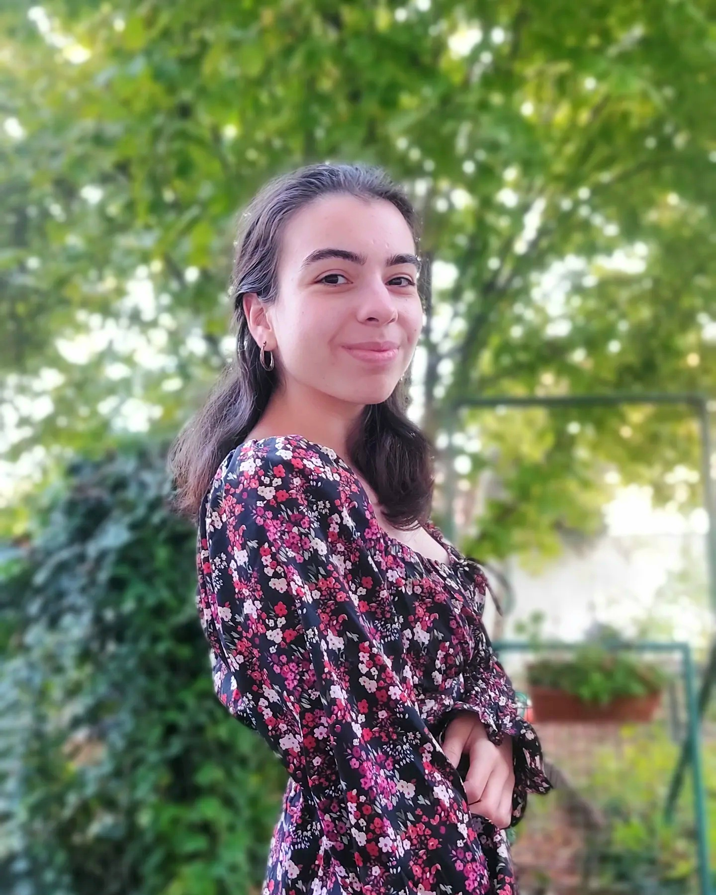

Unser Team
Tanja Fischer
Gründerin und Inhaberin
Tanja Fischer hat 2012 das Unternehmen "Fischer Reisen GmbH" gegründet und organisiert mit Leidenschaft Touren durch das atemberaubende Kappadokien. Ihr Ziel ist es, Reisenden unvergessliche Erlebnisse zu bieten.
Selin Yavuz
- Alter: 29 Jahre
- Sprachen: Deutsch, Türkisch, Englisch
- Interessen: Archäologie, Fotografie, traditionelle Küche
Selin kennt die versteckten Höhlenkirchen der Region wie ihre Westentasche und liebt es, Gäste mit lokalen Legenden zu faszinieren.
Markus Schwarz
- Alter: 35 Jahre
- Sprachen: Deutsch, Englisch, Französisch
- Interessen: Geschichte der Seidenstraße, Wandern, Kulturgeschichte
Markus hat in Istanbul Geschichte studiert und bietet gerne Touren für geschichtsinteressierte Reisende an.
Alejandro Torres
- Alter: 32 Jahre
- Sprachen: Spanisch, Englisch, Türkisch
- Interessen: Architektur, Drohnenfotografie, Abenteuerreisen
Alejandro begeistert sich für spektakuläre Ballonfahrten und teilt sein Wissen über die geologischen Formationen Kappadokiens mit beeindruckenden Bildern.
Ayşe Demir
- Alter: 27 Jahre
- Sprachen: Türkisch, Deutsch, Englisch
- Interessen: Volksmusik, Keramikkunst, Naturerkundungen
Ayşe ist in Kappadokien aufgewachsen und kennt nicht nur die touristischen Highlights, sondern auch abgelegene, authentische Orte.
Tirza Fischer
Webseite
Matrikelnr.: 3024128